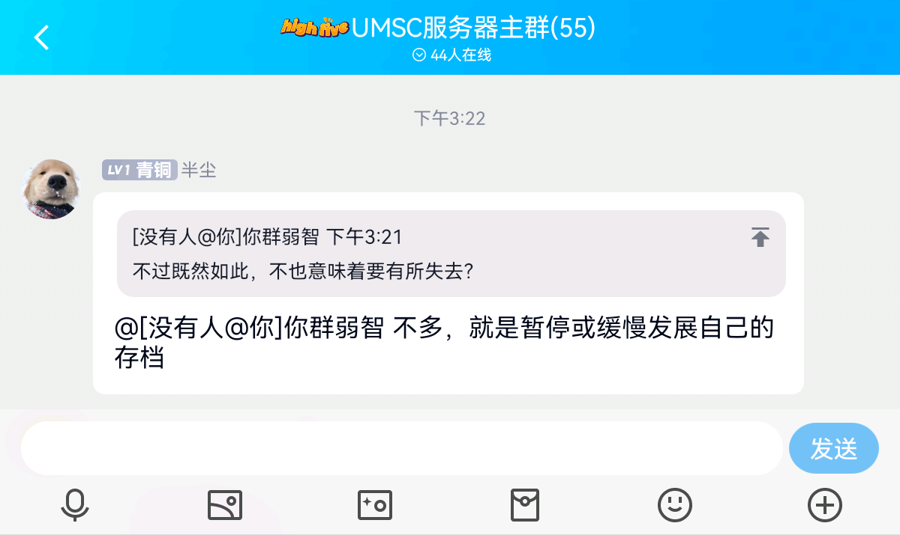
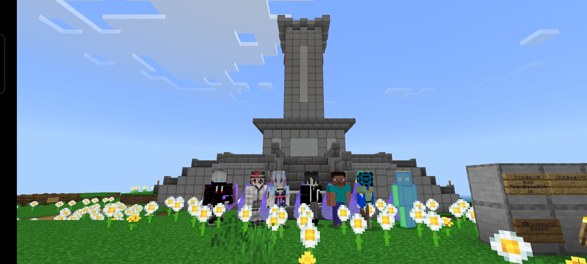
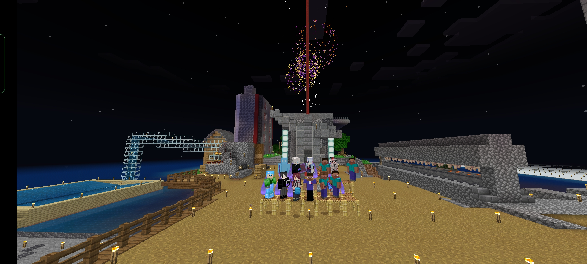

UMSC自二代宣传片发布以来服史
- 2022/08/19 二代宣传片发布
- 2022/08/24 服务器一大召开，奠定服务器未来发展方向
- 2022/08/24 难度改为困难
- 2022/08/25 蘑菇岛初步工业化，新区成立
- 2022/08/25 西南新工业区成立
- 2022/09/03 蘑菇岛革命爆发，一天鲨两人（
- 2022/09/03 蘑菇岛临时政府成立（就存在了几个小时
- 2022/09/03 新格里布哥罗德成立
- 2022/09/07 上午 Ra 作弊被撅出服务器（作弊套挨了30 个力量五活蹦乱跳）
- 2022/09/18 服务端换为LLBDS ，并增加机器人插件
- 2022/09/25 蘑菇岛革命结束，服务器进入稳定发展阶段
- 2022/10/01 第三次招新开始
- 2022/10/01 主岛刷铁机建成
- 2022/10/03 NGC 迎来第一个居民
- 2022/10/09 ReasonMY 找茬
- 2022/10/09 WebbySalt294712 拆除文物之后被扔出服务器
- 2022/10/28 前蘑菇岛市长StunningJeans93 回归
- 2022/10/29 93擅自代表MSSR 与我服宣战，被双方腐竹扔出各自服务器，成为最大输家（
- 2022/10/29 NG 第一次地方苏维埃召开，确立了蘑菇岛发展重心在NGA的路线
- 2022/11/05 北村-广场铁路线开通，结束了革命广场不通铁路的历史
- 2022/11/13 广场轻轨计划被白床提出
- 2022/11/17 1009 成为第一个被确认身份证号的玩家
- 2022/11/18 NG 分类仓库建成
- 2022/11/18 NG 进入社会主义中级阶段
- 2022/11/20 广场凋零笼建成，服务器活塞自由
- 2022/11/26 苏联成立100 周年地图画计划提出
- 2022/11/26 新服务器到手
- 2022/11/30 广场分类仓库建成
- 2022/12/01 广场320 熔炉组建成
- 2022/12/04 15：53 IOS 设备无法进入服务器问题解决
- 2022/12/09 21：11：45 1.19.41 测试服开启
- 2022/12/10 15：25：48 苏联成立100 周年地图画完工
- 2022/12/10 22：14 确认升级为1.19.40
- 2022/12/11 00：00 服务器正式升级为1.19.40 ，进入1.19 时代
第一批进入1.19时代玩家的合照
（从左到右依次为77923 、1009 、腐竹、李子、Zero ）
- 2022/12/17 16：47 半尘联合公社与UMSC 合（吞）并计划在全部成员的强烈反对下不了了之，UMSC 退出共联频道
- 2022/12/17 17：22 MSSR 宣布退出共联频道
- 2022/12/22 红旗落地 共联解体（似乎又重组了

- 2022/12/22 X BC W S三虫豸回归 （冬至× 万圣节✓）
- 2022/11/26 地狱高速重做计划提出
- 2022/12/31 跨年合照

- 2023/01/03 潜影盒自由
- 2023/01/03 BHIZ -BMF -ARW 冰道通船
- 2023/01/03 地图更新更新交通线以及新地区（NGEI 、BMF 、ARW ）
- 2023/01/04 NG32熔炉组建成
- 2023/01/05 14：25 ARW -RR 冰道通船
- 2023/01/05 15：54 ARW -RR 冰铁混合线通车
- 2023/01/05 15：54 UMSC 主世界交通把全服所有地方都连了起来
- 2023/01/05 晚上 扫地机结构改进。时代，前进！
- 2023/01/16 开始剪辑第三代宣传片
- 2023/01/17 20:00 新版网站上线
- 2023/01/24 RLS区旗最终定稿
- 2023/01/31 石材工厂建成
- 2023/01/31 11:55 新下界交通动工
- 2023/01/31 12:30 广场的冰山没了
- 2023/01/21 除夕合照

- 2023/02/04 20:00 第二次会议开始
- 2023/02/11 开始挖巴库空置域
- 2023/02/19 17:30 开始轰炸空置域
- 2023/02/21 革命广场市改革重组
- 2023/02/24 服务器安装trapdoor插件
- 2023/03/08 副服主 ZeroMostia7321 把 UMSC审核小组 群的群主身份转让给MC8081
- 2023/03/14 21:16 副服主 zhang061009 退服
- 2023/03/19 CUF成立
- 2023/03/22 23:34 副服主 ZeroMostia7321 退服
（本服史截至2023/02/04）
返回首页
返回导航页